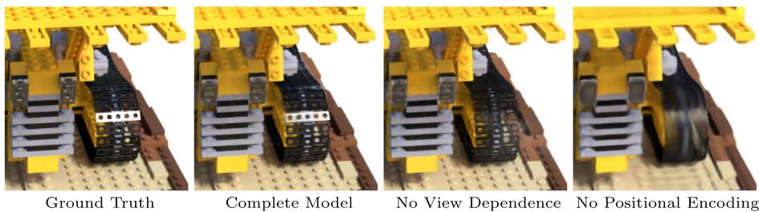

原文结论：「positional encoding (row 2) and view-dependence (row 3) provide the largest quantitative benefit followed by hierarchical sampling (row 4)」——位置编码与视角依赖收益最大，其次才是分层采样。另外 $L=15$ 没比 $L=10$ 更好，作者解释 $2^L$ 已超输入数据最高频（约 1024），再多频率也是浪费。
互动判断
为什么 NeRF 必须加位置编码，而不能直接把 $xyz$ 喂给 MLP？

原图注（Fig. 4）：Removing view dependence prevents the model from recreating the specular reflection on the bulldozer tread. Removing the positional encoding drastically decreases the model's ability to represent high frequency geometry and texture, resulting in an oversmoothed appearance.（去掉视角依赖后模型无法再现推土机履带上的镜面反射；去掉位置编码后模型表示高频几何与纹理的能力大幅下降，画面变得过度平滑。） 怎么看这张图：这是位置编码作用的视觉版证据，与 Table 2 第 2/3 行数值互为印证。带位置编码、带视角依赖的图清晰锐利；去掉位置编码后，推土机履带、纹理都「糊成一团」——正好演示「只给低频原料就画不出细纹」。
原图注（Fig. 2）：An overview of our neural radiance field scene representation and differentiable rendering procedure. We synthesize images by sampling 5D coordinates (location and viewing direction) along camera rays (a), feeding those locations into an MLP to produce a color and volume density (b), and using volume rendering techniques to composite these values into an image (c). This rendering function is differentiable, so we can optimize our scene representation by minimizing the residual between synthesized and ground truth observed images (d).（神经辐射场场景表示与可微渲染流程总览——沿相机光线采样 5D 坐标 (a) → 送入 MLP 输出颜色与体密度 (b) → 用体渲染合成图像 (c) → 该渲染函数可微，故可用合成图与真值图的残差反传优化场景表示 (d)。） 怎么看这张图：本节复用这张图（它在 0036 也出现过）。重点看 (b)：一个 MLP 实际被跑了两次——粗网络先给出沿光线的密度分布，再决定细网络在哪些点多采样。它是唯一能标出「粗/细两路采样」的图，正好配本节的分层采样细节。
原文第 189 行：「The biggest practical tradeoffs between these methods are time versus space. All compared single scene methods take at least 12 h to train per scene」——所有单场景方法每场景至少训练 12 小时。
④ 依赖 COLMAP
位姿/内参/包围盒都得先有，真实数据靠 COLMAP 估计（接 0027）。
⑤ 视角稀疏掉点
100→25 图，PSNR 31.01→27.78。稀疏输入是它的软肋。
★ 两条开放问题（最有价值的「泼冷水」）
原文自己列了两条，务必引用：
效率：「there is still much more progress to be made in investigating techniques to efficiently optimize and render neural radiance fields」——如何高效地优化与渲染神经辐射场，仍有大量空间。
可解释性：「sampled representations such as voxel grids and meshes admit reasoning about the expected quality of rendered views and failure modes, but it is unclear how to analyze these issues when we encode scenes in the weights of a deep neural network」——体素/网格这类采样表示，你能分析「哪会渲坏、为什么坏」；但把场景编码进深度网络权重后，你不知道它会在哪里失败。